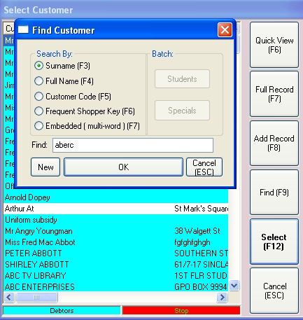
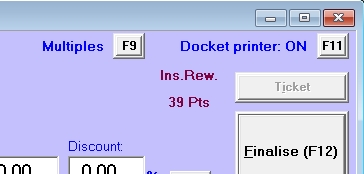
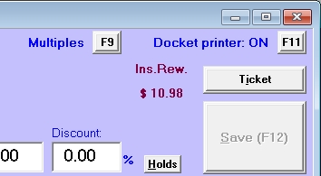
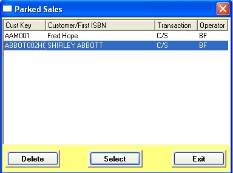
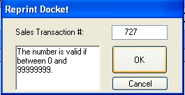
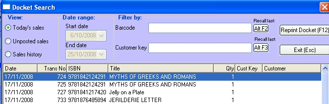
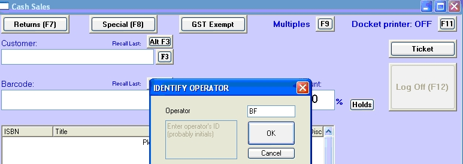

|
|
| Singles/multiples
|
To set Singles as the default when you open the point of sales window:
Access Utilities/System Options – on the Sales Tab tick "Default to Singles in POS" and save the setting.
|
|
| Using the keyboard
|
Escape key
In the POS window, the Escape key can be used to clear the customer field, to clear the barcode fields, to close any pop up windows (including the Tendering window), to void a sale and to close the POS window.
Enter & Tab keys
The Enter key can be used to move around the various fields on the POS window (as can the Tab key). Also, if the Multiples option is set, the Enter key will engage the Save button. So scan a barcode and press the Enter key three times and the item will be saved to the browser. Similarly in the Tendering window, the Enter key will engage the OK button to process a sale.
|
|
| Voids
|
|
|
| Customers and sales
|
Reasons to record customer against sales:
| · | For use in rewards and loyalty programs.
|
| · | For marketing: using Ebility's category features, you can build up a buying profile of your customers and target advertising to them using mass mailouts and emails using the Ebility Modules/Customer Mailout module.
|
| · | To record laybys, special orders and held items for a customer.
|
| · | For account customers, you will be able to charge a sale to their account.
|
Finding a customer code
There are several ways to search for a customer.
In the POS window, click on the F3 button (or press the F3 key ) to open the customer search window. You will be offered five search methods:
| · | Surname: enter all or the first part of a surname (e.g. to find a customer named Abercromby type 'aberc' into the Search field).
|
| · | Full name: e.g. to find ABC Displays Pty Ltd, type in "abc disp".
|
| · | Customer code: not useful in this circumstance.
|
| · | Frequent shopper key: if you have issued a frequent shopper card, select this option and scan the card into the Search field.
|
| · | Embedded: this is a free text search. Search for a part of the customer's name or address, or their phone number. For instance you could type into the Search field, "blue gum road" or you could enter their mobile number.
|

Handy shortcut
If you have just previously looked up the customer in another Ebility window or you are processing a second POS transaction for them, you can press the 'Alt F3' keys, or click the button, to load the last-used customer code into the customer field.
Adding a customer at the POS
You can add a customer while processing a POS transaction. Click on the F3 button to open the customer search window where you can click on the New button. In the New Customer window complete whatever customer details you require.
(Alternatively if the Select Customer window is already open, click on the Add Record (F8) button to open the New Customer window).
| Instant Rewards
|
In this case the customer has previously spent $39.

Once they reach the threshold set in the rewards program, it will instead display the amount of the reward they have earned.

| Product searches
|
Handy shortcut
If you have just previously looked up the product in another Ebility window, you can press the 'Alt F2' keys, or click the button, to load the last-used barcode into the barcode field.
| Charging a sale to a customer's account
|
When you finalise the transaction, instead of the Tendering window opening, the POS prints either an A4 invoice or an invoice docket (the flag for this is set on the Sales tab of System Options) and the charge is placed on the customers account. At the end of the transaction, the POS window will clear and be reset for the next (standard) transaction,
At any time during the transaction, you may click on the Cash Sale (F4) button to change the transaction back to a standard sale.
Note: The Sales/Invoicing window is the preferred area to process invoices and credit notes as it has ability to apply comments, allows backordering, append facilities and to apply payments. The Cash Sales/Invoice option gives a quick means of processing a sale that was started in the Cash/Sales window and then requires conversion to charge on account but was not designed as the primarily invoicing screen.
| Selling special orders
|
Click on the Special (F8) button.
A window captioned 'Select Special Order' will open.

Enter the special order number in the Special Order Number field. (This field is a combo box which you can also click on to select from a drop down list of available special orders).
If you have not yet entered a customer code, the program will enter this data into the POS window's customer fields. The special order number will be displayed towards the top of the POS window. You can select further special orders by clicking on the Special (F8) button again.
Now scan the barcode of the ordered item. Any special orders deposits will be displayed and taken off the total value of the order.
You can also scan other items not on the special order.
When all items are scanned in, finalise the order as for a standard cash sale.
You may also turn the sale into a layby by pressing the Layby (F5) button.
Note
It is important to process the special orders using the Special (F8) button rather than just processing them as a standard sale. If treated as a standard sale, the special order is left as outstanding on the system.
| Selling an item on Hold
|
You can reserve stock for a customer by putting it "on hold". If an item is on hold it must be taken off hold to sell it.
When you go to sell an item on hold, the system will pop-up the Holds window after you scan the item in a sale.
(Normally this will only occur when all remaining copies are on hold. However your system may have been set up to have the Holds window pop up whenever there is a held copy of a title).
The Holds window will display a list of customer for whom copies of this title are being reserved.
To release a held item for a customer, highlight the customer in the list and click the Release Hold Item button.
Click the Finished button to close the window.
| Parking and recalling a sale
|
At times you may have processed part of a (large) sale when the customer decides to go off to get more items or you may want to resume the sale at a different register. In these cases you can park the sale to be opened again late on the same day. To park a sale, simply click on the Park Sale button (or press 'Alt k'). The transaction will be saved to a temporary database table for recall later and the POS window will clear ready for the next transaction. The transaction can be recalled at any register in the store.
Recalling a sale
When the POS window is empty and there is a parked sale available for recall, the Park Sale button will be enabled and captioned Recall Parked. To recall the sale, click on the Recall Parked button (or press 'Alt k'). The Parked Sales window will open which lists all available parked sales, showing either the customer name, if a customer has been selected or otherwise the first product of the sale.

Use the arrow keys to navigate in the browser to the parked sale you want and click the Select (F12) button. (Alternatively, press the Escape button to back out and close the window).
When you recall the sale, the customer details, products pricing, layby, special order and invoicing information is loaded into the POS window and the Parked Sale window closes. (Note that the parked sale is then deleted from the Parked Sale database table. To re-park it, you will need to click the Park Sale button again).
You can now resume processing the sale.
Deleting a parked sale
When a parked sale is recalled, it is immediately deleted from the Parked Sale database table. To re-park it, click the Park Sale button again.
When the Parked Sale window is open, you can delete an unwanted parked sale, by highlighting the sale in the browser and clicking the Delete (F5) button.
When end of day processing is run, any outstanding parked sales are deleted.
Held stock
When you attempt to process a sale for an item where the product master shows no stock available, the program will check the Holds database table to see if that item has is being held for a customer. If it is being held, the program will not allow the line to be processed. However the Holds will window will open showing a list of for whom the stock is being held. In this window you can, if you wish, release the hold and proceed with the sale.
Dockets
When you process a sale, layby or invoice transaction, a docket will be printed at the end of the transaction.
| · | The number of copies to print for each type of docket can be set in the Copies tab of System Options.
|
| · | You can temporarily turn on and off docket printing by pressing the F11 button.
|
| · | At the end of each docket print, the docket header is re-printed ready for the next transaction. If you need to re-set the header, open the POS window's context menu (click the right mouse in the window) and select 'Reprint Header'.
|
| · | The docket greetings and footers, and layby instructions can be set in Utilities/System Options – System tab (use button 'other print settings')
|
Reprinting dockets
To reprint a docket, open the POS window's context menu (click the right mouse in the window) and select 'Reprint Docket'. A pop-up window will open.

Enter the number of the sales transaction. Click the OK button and the docket will be printed. Reprinted dockets are marked as 'reprinted'.
Note that the number of the last transaction for the register is displayed to the right of the Park Sale button.
Docket Search
If you do not know the docket number of the transaction you wish to reprint, you can search for it in the Docket search window. Open the POS window's context menu (click the right mouse in the window) and select 'Docket Search'.

The transaction may be stored in one of three database tables: today's sales, unposted sales (usually the previous day's sales) and sales history. Click on the appropriate radio button to select the table you want to search. The default is sales history.
For sales history searches, you can set a date range to display and you can also filter the sales by customer key and by product code. With today's sales and unposted sales, there is no filtering. Scroll though the browser and select the transaction you require.
To reprint a docket, double click on it in the browser. Alternatively highlight it and click the Reprint Docket (F12) button.
Operator sign in
Bookscan can be configured so that operators have to log in for each POS transaction. To enable this feature, set the flag on the Sales tab of System Options. With this flag set the operator will need to enter their initials before each transaction.

You can set a further flag here to use encoded initials. Here the operator must instead type in a three character password before each transaction. See the Security module for details on your security options.
If the operator log in window is closed, click on the Log In button in the Sales window, or the padlock icon on the toolbar to reopen it. Alternatively select Utilities/Log in from the main menu.
Marketing
Bookscan has a marketing module to allow you to record sales against customer locations (say post codes) and/or the source (usually what influenced the customer to make a purchase e.g. promotional flyers, direct mail marketing etc but you may set this up any way you wish). For more details on this functionality, see the Marketing section of the Modules chapter.
If this module has been purchased, the Marketing window will appear just before the Tendering window opens.

Enter the location and source information and then click the Select (F12) button and the Tendering window will open and you can proceed with the transaction as usual.
Options in setting up marketing include forcing the operator to enter the marketing data, turning off either the source or the location function and having default settings.